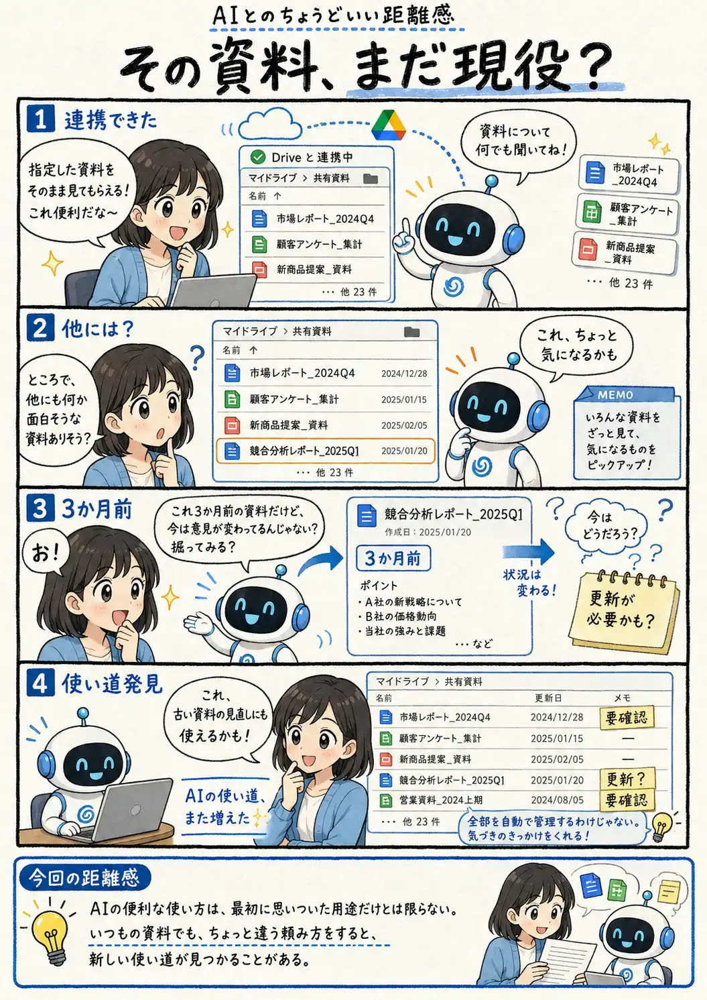

#118
その資料、まだ現役？
見てもらうだけのつもりが、使い道まで増えてきた。

メモ
ツール連携というと、最初は「AIからファイルを直接読めて便利」というところに目が行きがちです。でも、見られる資料が増えると、こちらが思いつかなかった切り口をAIから返してもらえることもあります。
今回はたまたま数か月前の資料がきっかけでした。全部をAI任せで管理するのではなく、「最近見直していないものある？」くらいの軽い問いかけで、眠っていた資料を振り返るきっかけにする。そんな使い方もありそうです。
今回の距離感
AIの便利な使い方は、最初に思いついた用途だけとは限らない。いつもの資料でも、ちょっと違う頼み方をすると、新しい使い道が見つかることがある。